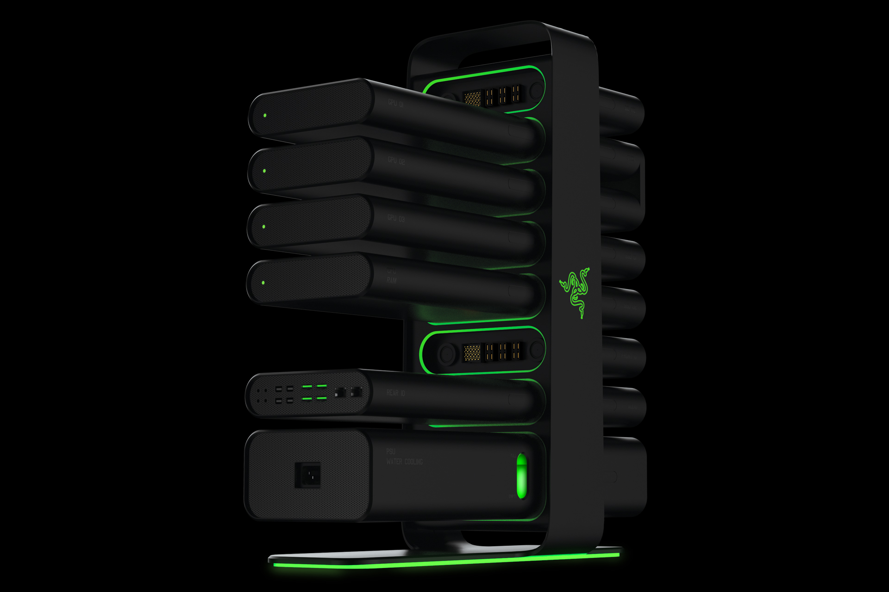

Quem está acostumado a acompanhar o mundo da tecnologia certamente já ouviu falar da Razer. A empresa que fabrica equipamentos para games e computadores é relativamente nova: ela iniciou suas atividades em 2005. De lá pra cá, a Razer trilhou um caminho de sucesso e firmou seu nome como uma das maiores empresas de tecnologia da atualidade. A companhia trabalha com uma grande linha de produtos — passando por mouses, teclados e notebooks —, mas todos eles utilizam a mesma lógica: qualidade e inovação. Segundo o CEO da empresa, Min-Liang Tan, a principal força de Razer é a coragem para acreditar e investir em novas ideias, coisa que muitas outras empresas não conseguem fazer, pois não querem abrir mão da segurança. Inovar é difícil e pode custar caro, e a Razer está disposta a correr esse risco.
Um grande exemplo de como a Razer está tentando reinventar a roda é o Project Christine, o computador que a companhia apresentou durante a CES 2014. O conceito de máquina inteiramente modular não é algo que nunca tenha sido pensado, mas a Razer foi a única que teve coragem de investir na ideia e transformá-la em produto. O Project Christine é um desktop quase tradicional com processador, memória e placa de vídeo. A diferença é como os componentes são conectados uns aos outros. A máquina possui um esqueleto principal, e o hardware é conectado a esse esqueleto como se fossem “cartuchos de video game”. Quer trocar de placa de vídeo? Basta remover a antiga e plugar a nova no lugar. Desse modo, qualquer um poderia fazer upgrade no seu PC rapidamente e sem maiores dificuldades. A ideia de se fazer uma máquina modular surgiu da necessidade da Razer em criar um desktop para jogos. Com o lançamento da linha Blade — notebooks gamer superpoderosos da Razer —, a pressão para que a companhia tivesse um desktop crescia cada vez mais. De acordo com o CEO da companhia, a reunião que deu origem ao conceito do Christine só deu certo porque todos os presentes são, antes de tudo, gamers. Para a definição do projeto, foram levantadas algumas questões básicas: se é uma máquina gamer, ela precisa ser poderosa. E, se é um desktop, a portabilidade não é um problema. Além disso, a máquina não pode fazer barulho e, para completar, precisa ter a possibilidade de ser atualizada rapidamente, de forma modular.
